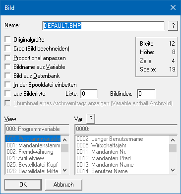
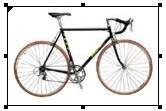
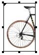
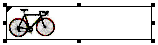
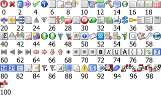
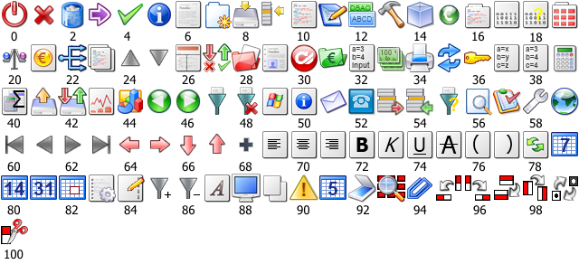
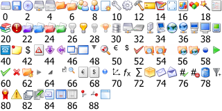
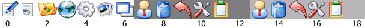
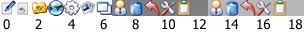
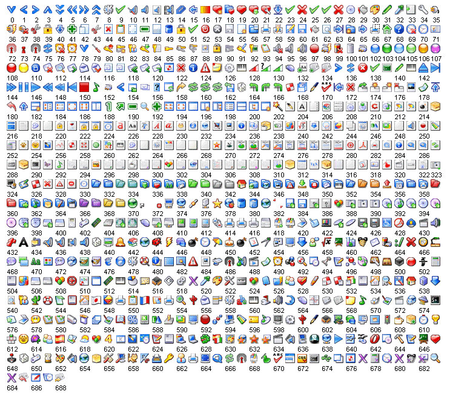

Ø Bild
Mit dem Bild-Button können Grafiken in Formulare eingebunden werden. Diese werden im Formular nicht als Platzhalter angezeigt, sondern in Echtform und können jederzeit in ihrer Größe geändert werden.
Eigenschaftsfenster "Bild"
Über das Eigenschaftsfenster "Bild" können unterschiedlichste Einstellungen für ein Bild vorgenommen werden.

Ø Name
Im Eingabefeld "Name" kann die Datenquelle der Grafik angeben werden, welche in das Formular eingebunden werden soll. Falls der Dateiname nicht bekannt ist, kann - analog dem Matchcode der WinLine Programme - mit einem Klick auf das Fragezeichen nach der Grafik gesucht werden. Es empfiehlt sich, alle eingebundenen Grafiken in einem zentralen Verzeichnis (z.B. am Server) zu speichern oder in den Systemtabellen der WinLine zu verwalten.
Hinweis
Mit Hilfe der Option "Bild aus Datenbank" wird gesteuert, ob
das Bild in einem Windows-Verzeichnis liegt oder sich in der
WinLine-Systemdatenbank befindet. Dementsprechend wird auch der Matchcode per
Icon  dargestellt.
dargestellt.
Ø Datei-Typen
Wenn durch Anklicken des Icons nach einer Grafikdatei gesucht wird,
stehen folgende Dateitypen zur Verfügung, welche WinLine unterstützt und drucken
kann.
ü Windows Bitmap (BMP, DIB)
ü Windows Meta File (WMF, EMF)
ü Graphics Interchange Forma (GIF)
ü Tagged Image File Format (TIF)
ü Truevision Targa (TGA)
ü JPEG File Format (JPG)
ü Zsoft Paintbrush (PCX)
ü Portable Network Graphic (PNG)
Ø Originalgröße
Falls die Grafik in ihrer Originalgröße eingefügt werden soll, dann muss diese Option aktiviert werden. Eine anschließende Veränderung der Größe ist in diesem Fall nur möglich, wenn die Option "Originalgröße" wieder deaktiviert wird.
Beispiel

Ø Crop (Bild beschneiden)
Mit dieser Option wird die Grafik in Originalgröße angezeigt. Wenn die Grafik anschließend verkleinert wird, dann bleibt das Bild der Originalgröße erhalten und wird abgeschnitten.
Hinweis
Diese Funktionalität wird in der WEBEditon nicht unterstützt.
Beispiel

Ø Proportional anpassen
Mit Hilfe dieser Option wird das Bild proportional an die Größe angepasst, welche vorgegeben wird. D.h. das Bild wird gemäß der X- oder Y-Achse vergrößert.
Beispiel

Ø Bildname aus Variable
Diese Option erlaubt den Einbau variabler Grafiken. D.h. es wird nur die Variable (über den Bereich "View / Var) angegeben, in welcher der Name der Grafik enthalten ist (z.B. Grafikdatei aus dem Artikelstamm oder Grafikdatei aus dem Mandantenstamm). Abhängig vom verwendeten Datensatz wird dann immer die dazugehörige Grafik geladen.
Ø Bild aus Datenbank
In der WinLine gibt es die Möglichkeit die Grafikdateien zentral in der SQL-Datenbank (Systemdatenbank) abzulegen (nähere Informationen dazu entnehmen Sie bitte dem WinLine START-Handbuch, Kapitel "Grafiken importieren"). Mit dieser Option wird festgelegt, dass die anzudruckende Grafik eben aus dieser Datenbank gedruckt wird.
Ø In der Spooldatei einbetten
Wenn die Ausgabe in den Spooler erfolgt, dann wird die Grafik selbst in die Spooldatei mit übergeben. D.h. die Grafik ist nicht abhängig von der SQL-Datenbank oder einem Verzeichnis, sondern ist fix im Dokument enthalten (sinnvoll bei Mailversand z.B. einer Rechnung mit Firmenlogo etc.)
Ø Aus Bilderliste
In der WinLine werden standardmäßig 5 Bilderlisten mit verschiedenen Symbolen zur Verfügung gestellt. Ist die Option aktiv, kann zuerst die Listennummer (0 bis 5) und dann die gewünschte Grafik gewählt werden.
Achtung
Die nun folgenden Grafiken werden genutzt, wenn die WinLine in dem Design "Buntes Design" oder "Office …" betreiben wird. Bei den Designs "Rotes Design" und "Blaues Design" werden die Grafiken in einer entsprechenden Farbgebung dargestellt.
Bilderliste 0
Die Grafiken der Bilderliste "0" sind im Format 16 x 16 Pixel gespeichert und werden in Programmfenstern der WinLine verwendet.

Bilderliste 1
Die Grafiken der Bilderliste "1" sind im Format 32 x 32 Pixel gespeichert und entsprechen den Grafiken der Bilderliste "0". Diese werden ebenfalls in Programmfenstern der WinLine verwendet.

Bilderliste 2
Die Grafiken der Bilderliste "2" sind im Format 16 x 16 Pixel gespeichert und werden in Programmfenstern der WinLine verwendet.

Bilderliste 3
Die Grafiken der Bilderliste "3" sind im Format 32 x 32 Pixel gespeichert und werden hauptsächlich im WinLine Cockpit (nicht HTML) verwendet.

Bilderliste 4
Die Grafiken der Bilderliste "4" sind im Format 16 x 16 Pixel gespeichert und entsprechen den Grafiken der Bilderliste "3". Diese werden ebenfalls im WinLine Cockpit (nicht HTML) verwendet.

Bilderliste 5
Die Grafiken der Bilderliste "5" sind im Format 16 x 16 Pixel gespeichert und werden hauptsächlich in WinLine Formularen verwendet.

Hinweis
Die Grafiken der Bilderlisten befinden sich im WinLine-Verzeichnis im Ordner "Image".
Ø View / Var
Über die Auswahllisten (Option "Bildname aus Variable" muss
aktiviert sein) kann die View (d.h. die SQL-Tabelle) und die Variable (d.h. die
SQL-Spalte in einer Tabelle) bestimmt werden, in welcher sich der Bildverweis
befindet. Mit Hilfe des Icons kann
das Fenster "Variable suchen" geöffnet werden. In diesem ist es möglich per
Volltextsuche nach Variablen zu suchen.
Hinweis
Weitere Information entnehmen Sie bitte dem Kapitel Einfügen von Variablen.